Esempio di Campagna · Pool di Varianti DCO · PANORAMICA
La vendemmia di Grappolotto e Foglina
Grappolotto e Foglina — un personaggio a forma di grappolo d'uva e la sua compagna nella veste di foglia di vite — sono la coppia di riferimento per promuovere cavatappi professionale in legno (vedi immagine sottostante). La storia presenta una stagione nella vita dei personaggi: la vendemmia, la fase di spremitura fino all'imbottigliamento. La semplice storia riprende il metro della precedente Pannocchino e Spighetta Grappolotto e Foglina restano un'illustrazione funzionale al meccanismo che fa da motore alla storia The Engine: generation, control, export, non una campagna cliente effettiva. Una precisazione sui ruoli: il brief di questa storia l'ho scritto io dato che il cliente è solo simulato, per mostrare il funzionamento del motore, che è indipendente dal cast, dagli ambienti, dal brand e dalle storie, che nel reale flusso operativo sono già stati decisi.
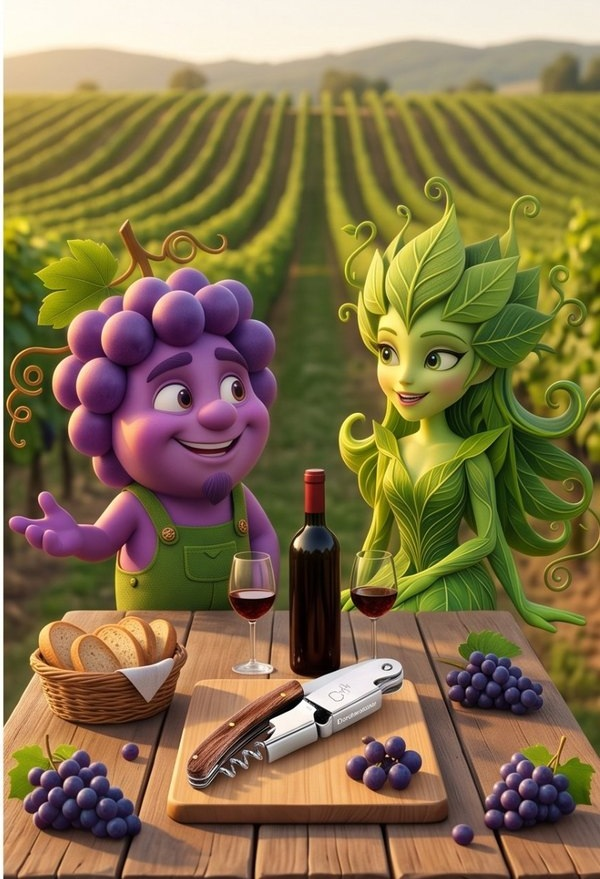
Prologo — il frame di riferimento
La storia che segue riusa, come àncora, la stessa coppia di riferimento già messa in scena nello sfondo da vigneto in Il motore: generazione, controllo, export (capitolo 02) — gli stessi due volti che il loop di giudizio e correzione, lì, deve mantenere stabili. Riusarla qui, invece di generarne una nuova, fa già parte della dimostrazione: la coppia è stata fissata una volta, per un altro post, e il fissaggio tiene.

Storia — la vendemmia
Otto scatti, dall'inizio alla fine: una giornata intera di vendemmia, un'ellissi onesta per i mesi che un vino vero impiega a maturare (interrotta una volta, di proposito, per un momento privato), un imbottigliamento serale, un richiamo al prodotto che ha aperto la storia, e un brindisi un anno dopo. Se il mantenimento d'identità resiste a piedi nudi in una tinozza di pigiatura, a un bacio tra le botti e a un salto temporale di un anno, resiste a gran parte di ciò che una campagna reale richiederebbe.
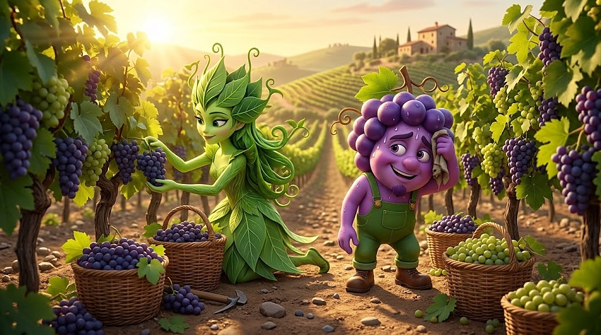
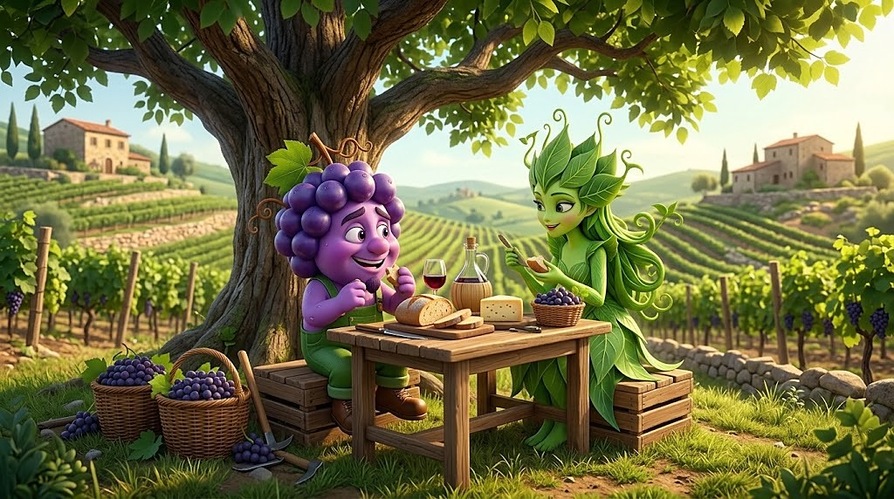
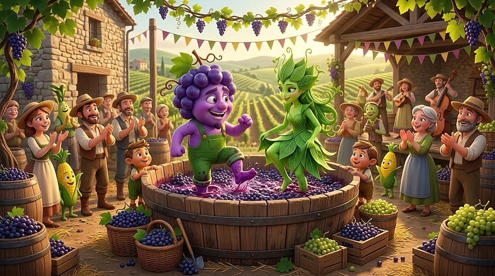
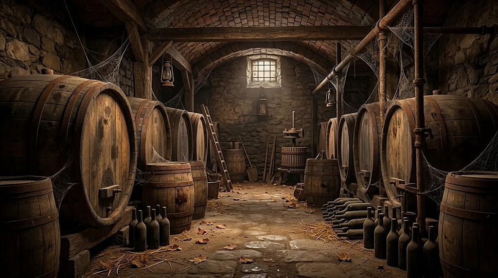
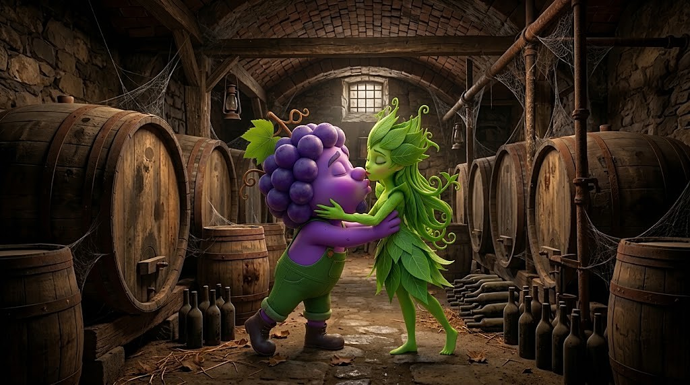
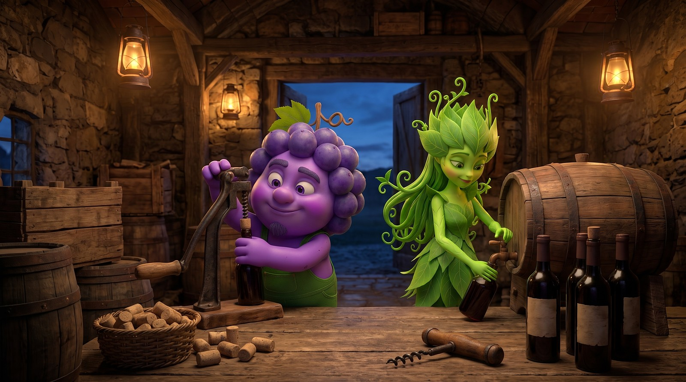
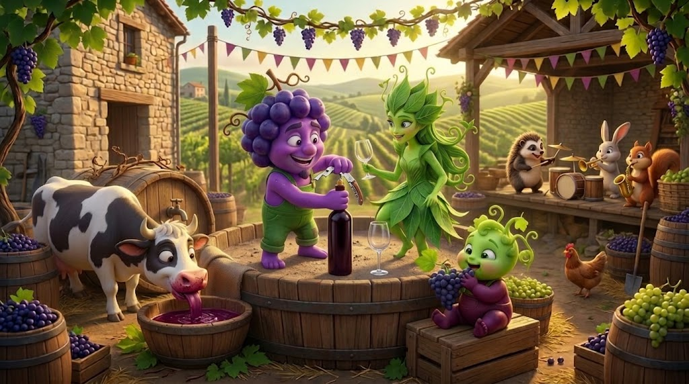
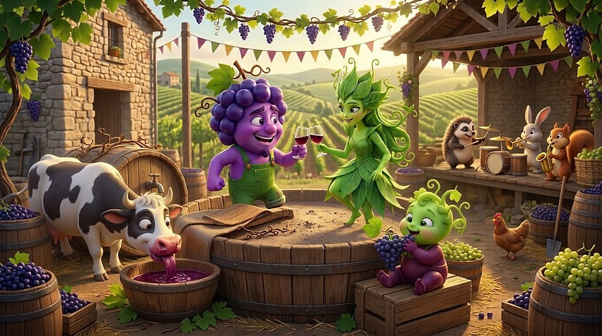
Altri script che lo stesso setup potrebbe raccontare
Prima di arrivare alla sequenza qui sopra, gli stessi elementi primitivi — la coppia fissata, il vigneto e la cantina, il cavatappi — sono passati attraverso altri modi di raccontare la stessa vendemmia. Nessuno di questi è stato poi trasformato in storyboard.
- Una versione colpita dal maltempo — la raccolta interrotta a metà e portata al riparo, cesti abbandonati tra i filari, per verificare se l'identità resiste a pioggia improvvisa e fretta invece che al lavoro calmo e assolato.
- Una versione di vendemmia notturna, raccolta a lume di lanterna sotto la luna piena — alcuni produttori vendemmiano davvero di notte per mantenere l'uva fresca, quindi questa è più vicina alla pratica reale delle altre.
- Una versione multigenerazionale — la nonna di Foglina, un secondo personaggio-foglia di vite mai disegnato prima, che supervisiona la pigiatura e tramanda la vecchia tecnica.
- Una versione da gara di paese — tinozze rivali che pigiano fianco a fianco durante una festa della vendemmia, Grappolotto e Foglina in gara con un'altra coppia invece di lavorare da soli.
- Una versione a un solo scatto, senza vendemmia: solo il brindisi finale, l'intero anno compresso in un bicchiere alzato — la storia minima che questa stessa coppia di riferimento può ancora raccontare.
Il meccanismo della pipeline dietro le quinte — lo stesso loop di giudizio e correzione dimostrato su questa stessa coppia in Il motore: generazione, controllo, export (capitoli 04–05) — è ciò che ha mantenuto Grappolotto e Foglina fedeli al modello attraverso otto ambientazioni molto diverse tra loro: una semplice inquadratura di prodotto che apre la storia, un campo all'alba, un tavolo da pranzo all'ombra, una tinozza di pigiatura, una cantina vuota diventata per un attimo un momento privato, una sala d'imbottigliamento serale, una festa della vendemmia in cui il prodotto ricompare nelle mani delle mascotte, e infine un brindisi un anno dopo.
Ogni inquadratura approvata di questa storia esce come una riga di feed, etichettata per beat, slogan e proporzione, nello stesso modo delle storie di Pannocchino e Spighetta: l'export che se ne occupa è il capitolo 06 di Il motore: generazione, controllo, export.
Output simulato del motore — il pool di varianti
Un esempio concreto di cosa produrrebbero davvero le ultime due fasi del motore — proporzioni (capitolo 07) ed export (capitolo 06), vedi Il motore: generazione, controllo, export — a partire da questa storia, nello stesso spirito dell'esempio del brand di dolci in Pannocchino e Spighetta. Partendo dallo scatto d'apertura della vendemmia qui sopra, il motore mette in scena un piccolo pool di varianti etichettate per Cavatappi Professionale, ritagliate nelle proporzioni che servirebbero a una campagna reale; l'asse meteo — lo stesso filare sotto un mattino sereno e sorpreso dalla pioggia — attraversa l'intero set. I due slogan qui sotto sono originali, scritti in rima in italiano per questa campagna, e adattati — non tradotti alla lettera — per mantenere una rima anche in inglese, una scelta spiegata nella nota sotto la griglia. I quattro render qui sotto sono ritagli reali da tre scatti effettivi — versione serena e versione di pioggia della vendemmia, più il brindisi di un anno dopo — ciascuno etichettato con le sue varianti.
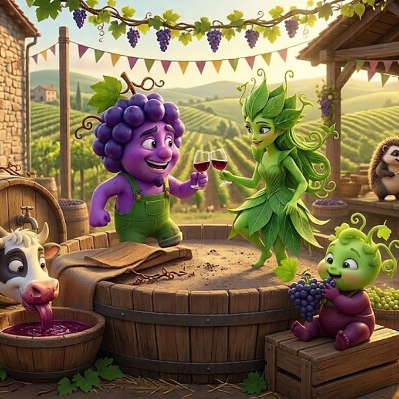
proporzione:1:11 · evento:raccolta · meteo:sereno · slogan:filari-tino«Con Foglina tra i filari e Grappolotto giù nel tino, la vendemmia ci regala un grande vino!»
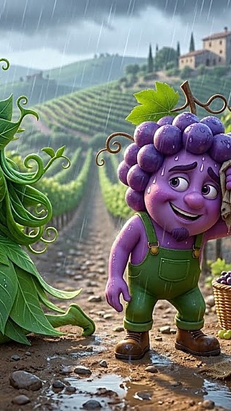
proporzione:9:162 · evento:raccolta · meteo:pioggia · slogan:mucca-germoglio«Tra una mucca che sbevazza e un germoglio birichino, Grappolotto e la sua bella fanno festa col buon vino!»
proporzione:16:93 · evento:raccolta · meteo:sereno · slogan:filari-tino«Con Foglina tra i filari e Grappolotto giù nel tino, la vendemmia ci regala un grande vino!»
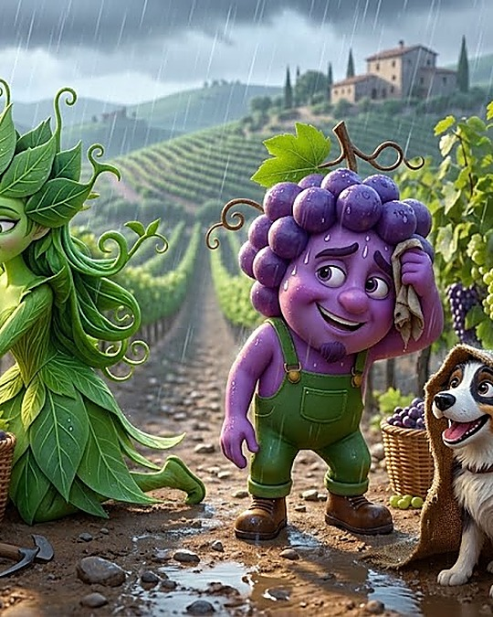
proporzione:4:54 · evento:raccolta · meteo:pioggia · slogan:mucca-germoglio«Tra una mucca che sbevazza e un germoglio birichino, Grappolotto e la sua bella fanno festa col buon vino!»
Ogni immagine etichettata qui sopra corrisponde esattamente a una riga del manifest descritto nel capitolo 06 di Il motore: generazione, controllo, export — qui simuliamo a mano quella fase di formattazione/export, usando due scatti reali al posto di un pool di render generato. Sugli slogan: entrambi sono stati scritti prima in italiano, ciascuno costruito su una rima interna («…tino, …vino» nel primo, «…birichino, …vino» nel secondo). Le versioni inglesi mantengono lo stesso meccanismo rimando su «vine»/«wine»: per questo nessuna delle due è una traduzione letterale dell'altra — un adattamento libero è la scelta giusta ogni volta che il punto della frase è la rima e non la formulazione esatta, ed è il campo review_status del manifest a registrare questa scelta invece di lasciarla implicita.
Export: Manifest report
Gli 11 campi che ogni riga porta con sé (vedi il capitolo 06 di Il motore: generazione, controllo, export per cosa serve ciascuno), compilati per la variante 1:1 soleggiata qui sopra:
asset_id : cavatappi-professionale-vendemmia-raccolta-filari-tino-1x1
brand : anonymous
product_line : Cavatappi Professionale
story : Grappolotto e Foglina bring in the harvest
beat : harvest
narrative_role : opening
cast : Grappolotto, Foglina
format : 1:1
reserved_zone : bottom 18% strip (y: 0.82–1.00), clear of both faces
variant_labels : [event:harvest, weather:clear, slogan:filari-tino]
qa_status : passed first try
review_status : approved, EN rhyme adaptation noted
Questo Manifest viene letto e utilizzato da una piattaforma di ad-serving/DCO — il livello di AD trafficking (Meta, Google/DV360, o un DSP proprietario dell'agenzia) che pubblica effettivamente gli annunci. Legge variant_labels e format per scegliere la riga giusta per ogni slot di consegna e regola di targeting; il motore del nostro tool non dialoga mai direttamente con la piattaforma ADV, solo attraverso questo Manifest.
- Quadrato (1:1) — la proporzione classica del feed Instagram/Facebook, usato anche dai pin di Pinterest e dallo slot quadrato del Google Display. ↩
- Verticale (9:16) — video verticale a schermo intero: Stories e Reels di Instagram/Facebook, TikTok, YouTube Shorts, Snapchat. ↩
- Widescreen (16:9) — pre-roll/in-stream di YouTube, link ads di Facebook e LinkedIn, e la maggior parte dell'inventory CTV/display programmatico. ↩
- Verticale (4:5) — la proporzione feed più alta di Instagram e Facebook, oggi l'opzione predefinita consigliata per gli annunci a singola immagine su entrambe le piattaforme. ↩